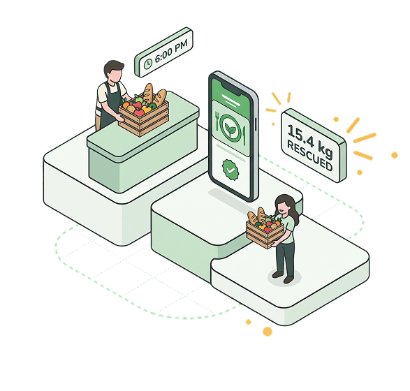

01
DONORPost surplus
Add food details, photos, quantity, and a pickup window.
Good food deserves a second chance. ANIPLATO connects surplus food with the groups that can put it to good use—before it goes to waste.

Surplus on one side.
Community needs on the other.
ANIPLATO brings the two together in a shared surplus-food board. Donors can offer food they have, and food groups can ask for what they need.
ANIPLATO follows each exchange from a verified account to an accepted offer, a confirmed handoff, and a report of how the food was used.
Read the specificationAligned with the UN Sustainable
Development Goals.
Whether there’s food to share or a program to feed,
there’s a route to make the connection.
A donor posts a listing. Food groups send offers to collect it. The donor chooses one group.
Illustrative workflow · no live donations on this websiteAdd food details, photos, quantity, and a pickup window.
Explain the intended use and propose a pickup time.
Accept one offer, confirm release, then confirm receipt.
Donors and food groups submit their role-specific documents. An admin reviews the registration before an account can participate.
Restaurants, bakeries, canteens, caterers, and groceries can post surplus raw, packaged, baked, and cooked food within the platform’s food rules.
The goal is a documented exchange,
from the first offer to the final report.
Role-specific documents and admin review establish who can take part.
Release and receipt are confirmed separately, recording both sides of the exchange.
Food groups document the program and people served after a completed handoff.
Food sharing and accountability. Delivery, food sales, and maps are outside ANIPLATO’s scope.
ANIPLATO is a free Windows app. You run it with your own MySQL database, so your data stays with you and no one else can see it.
Open the Releases page, download the Windows zip, unzip it and double-click ANIPLATO.exe. If Windows warns you, choose More info, then Run anyway.
The Setup screen asks for your own MySQL, on your computer or from any hosting provider. Test the connection, then choose your admin email and password.
Sign in as the admin, approve donors and food groups, and the board is ready for its first listing.
Setup never deletes or replaces existing data, and the download contains no database login or keys.
Read the full setup guideNo. This site explains ANIPLATO. The app is a free Windows program you download from the Releases page and run on your own computer, with your own MySQL database.
In your own MySQL database, on your computer or with a hosting provider you choose. Nothing is sent to the ANIPLATO team, and the download contains no shared database login.
No. Donors and food groups arrange the physical pickup and transport. ANIPLATO records the commitment and the two-step release and receipt confirmations.
The app is designed for verified food groups with a standing feeding activity. It is not an individual food-ordering service. Donor categories also depend on their verified role.
No. Food is donated for free distribution. Selling food and payment processing are outside ANIPLATO’s scope.
An optional read-only assistant answers questions about using ANIPLATO. It sees only your question and the screen name, never account data, and it cannot change anything. It needs your own free key; without one, the rest of the app works as normal.
The public GitHub repository contains the Java source, SQL schema, tests, project specification, architecture, and setup instructions. Use the GitHub links on this page.
Tried ANIPLATO? Tell us what makes sense, what needs work, or what you would like to see next.
This standalone version saves demo feedback only in this browser. Responses are not sent to the team. Please leave out personal or sensitive information.